Welcome
This notebook contains my personal notes for CS6290: High Performance Computer Architecture offered at the Georgia Institute of Technology. A summary of the course follows:
This course covers modern computer architecture, including branch prediction, out-of-order instruction execution, cache optimizations, multi-level caches, memory and storage, cache coherence and consistency, and multi- and many-core processors.
Course links
- https://omscs.gatech.edu/cs-6290-high-performance-computer-architecture
- https://ebookcentral-proquest-com.prx.library.gatech.edu/lib/gatech/detail.action?docID=787253
Introduction
What is computer architecture?
We can think of computer architecture similar to how architecture is considered for building. Buildings are designed to be well-suited for a specific purpose. The same can be said of computers, as we design different computers for different purposes. Some examples are desktop computers, laptops, and cellphones; they all have different purposes and require different computer architectures.

Why do we need computer architecture?
- To improve performance based upon some specific measure. These measures could include:
- Speed
- Battery life
- Size
- Weight
- Energy efficiency, etc.
- To improve the abilities provided by a computer. These abilities could include:
- 3D graphics
- Debugging support
- Security, etc.
The first need for computer architecture is about making computers cheaper, faster, smaller, etc. while the second need is based around making new things possible/providing new functionality. Computer architecture utilizes discoveries in fabrication technology and circuit design to achieve the goals stated above.

Computer architecture and technology trends
Computer architecture is about building future computers. The progress in computer manufacturing technology is fast. We shouldn't design a new computer with current technology and parts. By the time we've designed our new computer, it's obsolete and using old technology. We need to track technology trends in order to predict what's available in the future, allowing us to better design a new computer using these new technologies.

Moore's law
Moore's law provides a good starting point for predicting what future computers will look like based upon what is currently available today. As computer architects, we can use these predictions to guide our expectations of what technologies will be available for use when designing future computers. Below is a high-level summary of Moore's law:

The memory wall
Processor speed doubles almost every two years, while memory capacity also experiences the same phenomenon. Memory latency, however, has not kept pace with processor speed and memory capacity. This is what's called the memory wall and, in order to mitigate these differences in speed when processors need to access memory, we have been using caches to close that gap. Caches can be thought of as a series of stairs for memory access speed, and cache misses are the base of the staircase with the slowest memory access speed possible. A high-level illustration of the memory wall trend is provided below:

Power consumption
There are two kinds of power that a processor consumes:
- Dynamic (active) power - consumed by activity in a circuit
- Static power - consumed when powered on but idle
Active power
Below is an illustrative representation of the equation for calculating active power consumption by a processor. The representation also displays how we can calculate the change in active power consumption when a different chip configuration is used, and if voltage and chip frequency are changed. An explanation of each variable in the active power equation follows:
- capacitance - roughly proportional to chip area / larger chips will have more capacitance
- voltage - quadratic relationship between voltage and power consumption
- frequency - clock frequency (GHz) of a processor
- alpha - activity factor (percentage of processor transistors active for any given clock cycle)

Static power
Static power is power consumed while the processor is idle. Some of this is due to the voltage being too low to prevent transistors from leaking/wasting energy, but it can also come from other sources as well. Below is a high-level representation identifying the relationship between static and active power as voltage increases or decreases in the circuit. This representation also identifies that there is some optimal voltage settings for circuits to avoid utilize too much power in bot the active and static states.

Fabrication cost and yield
The cost to manufacture and convert silicone wafers to useable computer chips is pretty much static. We, primarily, have to account for chip yield when a silicone wafer is divided into a number computer chips - some of these chips can have defects while others work fine. Below is high-level representation of the silicone wafer to computer chip manufacturing process, and how the yield is derived based upon the number of defects in wafer versus the number of chips extracted from a wafer.

Below is an example of how we can calculate the fabrication cost per chip based upon chip size. Smaller chips cost less to manufacture, while larger chips cost the most. Smaller chips, over time according to Moore's Law, will be able to do more for less as we are able to fit smaller transistors onto the chips. Larger chips will be able to remain the same size and cost, however, they will be faster overall due to Moore's Law.

References
Metrics and Evaluation
This lesson covers latency and throughput, two metrics used to measure computer performance.
Performance
- Latency - the total time it takes for an operation to complete, from start to finish.
- Throughput - not the inverse of latency; because operations can take place concurrently within a pipeline, this can be thought of as the number of operations completed per unit measure of time.
Below is a high-level representation of this concept.

Comparing performance
Knowing how to measure performance, we can now compare the performance of two systems using our metrics. We want to be able to make a definitive statement about the speedup of a system in comparison to another system, basically stating that system x is faster than system y. We can compute this with both latency and throughput, however, our equations are slightly different. Below is an image showing us the equations for computing speedup using our two metrics.

Speedup
A speedup value larger than 1 means we have improved performance. With improved performance, we achieve higher throughput and shorter execution time. A speedup less than 1 means that we have worse performance. When computing speedup, we need to remember that performance is directly proportional to throughput and performance has an inverse relationship with latency.

Measuring performance
What workload do we use to measure performance of different systems? We can't use an actual user workload because:
- Many different users use computers in many different ways with many different programs.
- One workload will not be representative of all users.
- How are we supposed to acquire the workload data?
In order to solve this issue, we use benchmark workloads.
Benchmarks
Benchmarks are programs and input data that users and organizations have agreed upon for use in performance measurements. Usually, we don't have just one benchmark program but a benchmark suite consisting of multiple programs and input data. Each program within a benchmark suite is representative of a type of application.
Types of benchmarks
So what types of benchmarks are commonly used to measure performance? We have:
-
Real applications
- Most representative of real workloads.
- Also the most difficult to setup on new machines. Our testing environment likely doesn't have an operating system, hardware, graphics processors, etc.
-
Kernels
- The most time consuming portions of an application, usually a loop of some sort. We've isolated these processing intensive sections of code to test our machine. Usually good for testing prototypes.
-
Synthetic benchmarks
- Behave similar to kernels but are simpler to compile. We utilize these benchmarks when testing early prototypes of a machine. Usually good for design studies.
-
Peak performance
- Performance that's not based on running against actual code. The theoretical highest number of instructions per second. Usually good for marketing.
Benchmark standard
So how are benchmark suites created? Who makes them and what are the standards? There exist standards organizations that receive input from manufacturers, user groups, and experts in academia and these organizations produce standard benchmark suites. Some well known standard benchmark suites are:
- TPC - Benchmarks used for databases, web servers, data mining, and other transaction processing. [1]
- EEMBC - Used for embedded processing. [2]
- SPEC - Used to evaluate engineering work stations and raw processors. SPEC encompasses a large set of workloads, trying to cover a variety of uses for processors in high performance systems. A breakdown of these workloads is in the image below. [3]

Summarizing performance
To summarize performance, we are looking for the average execution time. A demonstration on how to calculate this is shown below. We should refrain from averaging the speedups for each application tested - averaging ratios will not provide useable data to summarize performance. In order to acquire the average speedup, we need to use the geometric mean for the execution times of each computer.

Iron Law of performance
Processor time (CPU time) can be expressed as:
(instructions/program) * (cycles/instruction) * (seconds/cycles)
So why do we think about these components of processor time instead of just measuring processor time directly? These three components allow us to think about the different aspects of computer architecture.
(instructions/program)- influenced by the algorithm used to create the program, the compiler used to interpret and generate the program, and the instruction set being used.(cycles/instruction)- influenced by the instruction set being used, and the processor design.(seconds/cycle)- influenced by the processor design, circuit design, and transistor physics.
Computer architecture primarily focuses on instruction set and processor design, and good designs of these two aspects attempts to balance their effects on CPU time.

Iron Law for unequal instruction times
It's pretty simple to calculate CPU times when we assume that all instructions for a program will take the same amount of cycles to execute. This isn't always the case, however. We need to be able to sum all the cycles for each type of instruction before we multiply this with our time per cycle. Below is a representation of this concept, showing us how to calculate a more realistic CPU time.

Below is an example problem in which we calculate the sum of cycles for a program in order to determine the CPU time.

Amdahl's Law
This law is useful when we need to calculate the overall speedup of the entire program, but we only enhanced a fraction of the program. Below is an image that attempts to explain the equation for Amdahl's Law, a description of each variable in the equation is provided:
(1 - frac_enh)- the fraction of the program that wasn't enhanced.frac_enh- the fraction of the program that was enhanced.speedup_enh- the speedup achieved due to the enhancement.
It's very important to understand that frac_enh is a percentage of the
original execution time that is affected by the enhancement.

Implications
It's important to aim for enhancements that achieve a speedup on a larger percentage of execution time for a program. This is demonstrated mathematically below.

Below is an example of how to use Amdahl's Law to compare multiple possible improvements.

Lhadma's Law
This law is jokingly used to express the opposite of Amdahl's Law. While Amdahl's Law says to optimize for the common case, Lhadma's warns us that we should avoid attempting to optimize too much at the expense of other parts of our performance. An example is provided below.

Diminishing returns
This concept covers the idea that as computer architects, we need to continuously review what needs to be enhanced within a system instead of continuously enhancing the same portion of a system. This concept stems from Amdahl's Law, as it describes that, eventually, the enhanced portion of a system will become smaller as we apply enhancements across generations. We will achieve a diminished speedup if we continue to enhance the same portion of the system. We need to continually reassess what is the common case when conducting our enhancements. Below is a high level representation of this idea.

References
Pipelining
This lesson reviews pipelining to set the stage for more advanced topics.
Pipelining in a processor
This section covers basic pipelining in a processor. Most processors are much more complex than the example provided here, however, this is used to review content for students.
In a traditional processor pipeline, we have are series of stages. The following listing of stages is not all stages, but it encompasses the important ones:
- fetch
- read
- decode
- execute
- memory access
- write
So how does pipelining apply to these stages? Instead of fetching, decoding, and executing one instruction at a time, while one instruction is being decoded, another instruction can be fetched from instruction memory. Then, when one instruction is being executed, we can be decoding the instruction behind it. So, while the latency may not change, the throughput of instructions through the pipeline increases. Below is a high level representation of this concept:

Below is an example of calculating the latency of process with and without a pipeline.

Below is a similar example as the one above, however, this one applies to instructions and cycles.

Pipeline cycles per instruction
Throughout these notes we've been assuming one cycle per instruction, or a CPI of 1, when our pipeline is full. In the real-world, however, we'll have billions of instructions to execute - will our CPI always be 1? Here are some reasons why our CPI might not be 1:
- initial fill - when the pipeline initially fills up, our CPI will not be equal to 1. Regardless, as our instruction number reaches infinity, CPI will begin to approach 1.
- pipeline stalls - there exists the possibility that a fault occurs in the pipeline and an instruction stalls, causing it to have to remain at that stage for a cycle.
Below is a high-level representation of how a CPI can be greater than 1.

Processor pipeline stalls
A processor pipeline stall usually occurs when some instructions depend upon the outcome of previous instructions that conduct a read/write. In the example below, the program loads a value into a register, increments the register, and then stores that value into a different register. The load operation must occur before the increment and load instruction, otherwise the increment instruction will be incrementing an incorrect value. Because of this dependency, a processor pipeline stall occurs, and a bubble in the pipeline is created. The increment instruction must wait two cycles until the memory is read and written into the register that is to be incremented.
This phenomenon causes our CPI to be greater than 1.

Processor pipeline stalls and flushes
A processor pipeline flush occurs when the processor pipeline fetches and
decodes instructions that aren't actually supposed to be executed, so they're
removed from the pipeline and replaced with bubbles. Below is an example
demonstrating what happens when a JMP instruction is introduced into the
pipeline. Some instructions behind the JMP are fetched and decoded, however,
they are fetched from an incorrect location in memory. After the ALU
determines the destination of the JMP, instructions from the JMP destination
are fetched and decoded, and the instructions that weren't destined to be
executed are flushed from the pipeline.
This is another phenomenon that could cause the CPI to be larger than 1.

Control dependencies
The problems described in the previous sections that cause these processor pipeline stalls are called control dependencies. The example provided below provides a high-level representation of a control dependency. In the scenario, a branch instruction will jump to some label in code, however, to sections of code depend upon the branch: the code directly after the branch and the code contained at the label.
This example also shows us how to predict the CPI based upon this concept of control dependencies. Given a percentage of instructions are branches, given that a percentages of branches are actually taken, and given that we know that the fetching and decoding of control dependencies causes at least two bubbles in the pipeline, we can calculate the increase in CPI from its normal value of 1.
In later discussions, we will cover a concept called branch prediction that is designed to mitigate the occurrence of these bubbles within the pipeline by predicting where a branch will land in order to fetch and decode the correct instructions. Control dependencies can cause even more bubbles to form in a pipeline if the pipeline contains more than 5 stages, so these issues definitely need to be mitigated to increase performance and normalize the CPI.

Below is an example question from the lectures that asks us to determine the CPI given a percentage of branches/jumps taken and when the branches/jumps are computed in the pipeline.

Data dependencies
Briefly described in this section, data dependencies occur when one instruction depends upon the outcome of another instruction. TODO types of dependencies exist:
- read after write (RAW) - type of dependency in which one instruction relies upon the previous instruction writing some data that will be used by the dependent instruction. This type of dependency is also called a flow dependence because the data flows from one instruction to the other. This type of dependency is also called a true dependency because the value being used by the dependent instruction doesn't exist until the previous instruction writes.
- write after write (WAW) - type of dependency in which the order of write
operations needs to be preserved. The example provided uses registers, in which
a specific value is expected to be within
R1for future instructions. These writes will not be able to to be conducted out of order - they both write to the same location. This type of dependency is also called an output dependency. - write after read (WAR) - type of dependency in which a previous instruction needs to read some data, but a future instruction intends to write to that data. These instructions can not be interleaved, the previous instruction expects the data to be unchanged upon read. The read will take place before the write, creating the dependency. This type of dependency is also called an anti-dependency because it reversed the RAW dependency.
The WAW and WAR dependencies are called false or named dependencies. Read after read (RAR) is not a dependency.

Below is an example from the lectures inspecting a series of instructions to determine what data dependencies exist.

Data dependencies and hazards
A hazard is when a dependence results in incorrect execution of an instruction. In the example provided below, there are three instructions that have dependencies but their dependencies will not result in incorrect values being used for execution.
The DIV instruction, however, will be using a stale value for R4 when it
executes and writes to R10 because, when the DIV instruction reaches the
decode stage of the pipeline, the SUB instruction has not yet written its
value to R4.
Hazards can both be a property of the program as well as because of the pipeline. Another example provided in the image below shows that, in this 5 stage pipeline, true dependencies do not create a hazard when 3 or more instructions separate the dependent instructions. This is because, by the time the first instruction in the dependent pair executes and writes, the second dependent instruction is still being fetched.

Below is an example problem with a 3 stage pipeline, demonstrating how we can inspect instructions to determine dependencies and hazards.

Handling of hazards
We need to introduce mechanisms to handle hazards we detect in order to protect our CPI and performance. We don't care about all dependencies that are introduced, only the ones we know will cause incorrect execution. These are our possible mitigation techniques:
- Flush dependent instructions - used for control dependencies. We don't intend to execute instructions introduced into the pipeline by control dependencies.
- Stall dependent instructions - used for data dependencies in order to prevent instructions from reading invalid values.
- Fix values read by dependent instructions - also used for data dependencies, this introduces the concept of forwarding, providing the a dependent instruction with the value it needs to correctly decode and execute.
Below is a high-level representation of these hazard handling mechanisms.

Below is an example problem with a 5 stage pipeline and a series of instructions containing multiple dependencies and hazards that must be avoided. This example demonstrates how we can use the pipeline to determine when it is appropriate to flush, stall, or forward to handle hazards.

How many stages?
In the pipelines we've reviewed, the ideal CPI is 1. Later in the course, pipelines with a CPI higher than 1 are expected because the pipeline is attempting to execute more than one instruction per cycle. Regardless, each pipeline setup has an ideal CPI that it attempts to achieve.
So what happens if we add more stages? Well, we get more hazards. If a branch is resolved in the third cycle of a pipeline, we only have to flush the two previous instructions that were fetched and decoded. If a branch is resolved in, for example, the tenth cycle of a pipeline, now 9 instructions have to be flushed from the pipeline - kinda wasteful. With more hazards, our CPI also increases.
Inversely, with more stages in our pipeline there's less work being done per stage, decreasing our cycle time - we can execute cycles faster. Remember the Iron Law?
CPU time = #instructions * CPI * cycle_time
If our number of instructions stays the same, but our CPI increases and our cycle time decreases, we achieve a balance even with this longer pipeline. We carefully choose the number of stages in our pipeline to balance the relationship between CPI and cycle time.
Modern processors achieve the most performance with a processor pipeline of 30 - 40 stages as this strikes a perfect balance between cycle time and CPI. This is great, but with an increase in number or processor pipeline stages, we also draw a lot of power because we execute a lot of cycles per second. Thus, a reasonable number of stages for the processor pipeline of modern processors is 10 - 15 stages as this strikes the best balance between performance and power.
Below is a high-level representation of the concepts described above.

References
Branches
In the previous pipelining lesson, we saw the effects that hazards have on performance. Branches and jumps are common instructions that introduce control dependencies - our only solution can't just be to flush the processor pipeline each time a branch or jump is decoded. This lesson covers techniques used to effectively avoid hazards introduced by control dependencies.
Branch in a pipeline
The example provided below uses a 5 stage processor pipeline to demonstrate the
costs of incorrect branch prediction. The example explains how a branch
instruction works: is registers R1 and R2 are equal, the immediate value
represented by Label will be added to the program counter, PC, and execution
will begin at that location in memory. Otherwise, the program counter will be
incremented regularly - R1 and R2 are not equal.
In this scenario, a branch instruction enters the pipeline at cycle 1. The
branch instruction isn't evaluated until cycle 3 by the ALU. Meanwhile, two
instructions are fetched and decoded - these are represented by a ?? because
the instructions can be fetched either from memory directly after the branch
instruction or the landing location in memory if the branch instruction is
taken.
If we predict the outcome of the branch instruction correctly, the instructions that were fetched and decoded will execute immediately after the branch instruction leaves the pipeline - the branch will have taken 1 cycle to complete. If we predicted the outcome of the branch incorrectly and loaded the wrong instructions into the pipeline, these instructions will have to be flushed and the branch will have taken 3 cycles to complete.

References
Prediction
Branch prediction requirements
What do we need in order to successfully predict whether a branch will be taken or not? What do need in order to determine where the branch is going if it's taken?
The requirements are as follows:
- Branch prediction needs to work using only the knowledge of where we fetch the
current instruction from.
- We need branch prediction to guess the program counter of the next instruction to fetch.
- With branch prediction we must correctly guess:
- Is this a branch?
- If it is a branch, is it taken?
- If it is a taken branch, what is the target program counter?
Branch prediction accuracy
The image below demonstrates how we can calculate the theoretical CPI of a processor using branch prediction given its branch prediction accuracy, penalty per missed prediction, and percentage of instructions that constitute branches within a benchmark program. The equation is contains these components:
base CPI- in the example below, this is1.predictor accuracy- this is the number of mis-predicted branches per instruction.penalty incurred- the penalty is dictated by the number of stages in a pipeline and when the branch instruction is evaluated.
A more accurate branch predictor increases our performance, decreasing the number of penalties taken for mis-predicted branches, thus decreasing our CPI. The amount of help a better predictor has changes depending upon how long the processor pipeline is. Longer pipelines benefit more from better branch prediction than shorter ones.

Below is branch prediction example problem. The key to this problem is the fact that no branch prediction is being conducted so, until each instruction is decoded, another instruction will not be fetched, thus creating a bubble within the pipeline. So, non-branch instructions will take 2 cycles to execute and branch instructions will take 3 cycles to execute. Instructions will not be fetched after a branch instruction is decoded because the branch instruction still has to be evaluated prior to fetching from the possible branch destination.
In contrast, each instruction for the perfect branch predictor takes 1 instruction, no bubbles exist within the processor pipeline. This is because the branch predictor knows which instruction will be fetched next before the previous one is decoded - including the branches.

Performance with not-taken prediction
A simple implementation of branch prediction that has an increase in performance over just not predicting branches at all is the prediction that all branches are not taken. If no predictions are made, ever, and instructions are only fetched after previous instructions are decoded, branches will always take 3 cycles in our example 5 stage pipeline and regular instructions will take 2 cycles.
If we always assume the branch is not taken, sometimes we'll be right and the branch will only use 1 cycle, while sometimes we'll be wrong and the branch will use 3 cycles - this is still better than making no predictions at all. In this model, regular instructions only take 1 cycle, as well.

Predict not-taken
The predict not-taken predictor is the simplest predictor we can have, all it does is increment the program counter. No extra hardware is required to support the predict not-taken predictor - we should always have the ability to increment the program counter.
A rule of thumb in computer architecture is that 20 percent of all instructions are branches. For branches, about 60 percent of all branches are taken. Thus, the predict not-taken predictor is correct 80 percent of the time (because of non-branch instructions), plus another 8 percent of the time (because of branch instructions). Overall, the predict not-taken predictor is incorrect 12 percent of the time.

Why do we need better prediction?
The image below provides examples for different types of pipelines, showcasing the differences in performance using a predict not-taken predictor and a branch predictor that is correct 99 percent of the time. As you can see, as the processor pipeline gets longer and more complex, conducting more instructions per cycle, branch prediction becomes really important for performance. The ability to accurately predict branches achieves a speedup of 4 for the case of the 14 stage pipeline with 4 instructions per cycle.

Predictor impact quiz
Below is an example quiz that demonstrates how we can determine the impact of a predictor on the CPI of a processor pipeline. Given some metrics about the Pentium 4 processor, we are given a final CPI but not the theoretically ideal CPI of the pipeline. Using the metrics given, we have to derive the ideal CPI and then calculate the new CPI given a different mis-prediction percentage for our predictor.

Why we need better prediction, part 2
The below image displays how wasteful flushing the processor pipeline is when we fail to accurately predict branches. Depending upon how many stages are within a pipeline, while also accounting for the fact that we could execute multiple instructions per cycle, we see that would fetch and flush anywhere from 2, to 10, to 40 instructions - pretty wasteful.

How do we get better prediction?
In a previous section, we discussed the requirements that needed to be met in order to conduct branch prediction. In the image below, the lecture discusses that we don't have the ability to determine if the instruction is a branch, if the instruction is taken, or what the offset of the branch is because we still have yet to fetch the instruction.
What we do know, however, is that, based upon the program counter, we have a historical precedence for what happened at this program counter in the past. We know how the branch at this program counter was behaving in the past - we can use this information because it's pretty common that branches tend to behave the same way each time they are encountered.
We don't know what the current branch instruction to be fetched is going to do, but we can make a prediction based upon its history / the last time it was executed.

Branch Target Buffer (BTB)
The simplest predictor that uses history is the branch target buffer. So how does it work? The program counter (PC) is used to index into the BTB. Stored at this index is the predicted next program counter. The next program counter is fetched into the pipeline. When the branch is calculated, the real next program counter is determined and compared against the predicted next program counter that was fetched. If they're the same, the BTB predicted the next program counter correctly based upon the historical data saved for the program counter used as an index. If they're not the same, the BTB predicted incorrectly and the next program counter is saved to the BTB using the index program counter.

How big does the BTB need to be to implement the predictor? Well it serves the purpose of predicting the next instruction based upon the current instruction in the program counter. So in order to feasibly predict every next instruction, we need to have an index for every instruction in the program - meaning the BTB needs to be the same size as the program itself! That's not realistic, let's see if we can't find another answer.

Realistic BTB
First, we don't need an entry in the BTB for every single instruction in the program - we can have the BTB contain only the instructions that are most likely to be executed next. The BTB will operate somewhat like a cache, using values that are most recently used. An example provided in the lecture is a loop that contains, say, 100 instructions. As the loop executes, the BTB fills with the loop's instructions and the BTB doesn't change for the duration of the loop.
So how do we avoid program counter index collisions in the BTB? We use a mapping function that's simple enough to execute within one cycle. In the example provided, if the BTB contains 1024 entries, we use the last 10 bits of our 64 bit program counters as indices. Why are we using the LSB of our program counters? Because as a program increments, these values are what changes when each instruction is executed.

BTB Quiz
In the quiz below, we would think that we would just use the last 10 bits of the program counter, however, because our architecture enforces 4 bytes instructions that are word-aligned, each entry in the BTB needs to be even and also divisible by 4. So, in a BTB of 1024 entries, we would only be using 256 of the values - that's a lot of wasted entries.
Our solution is to ignore the last 2 bits of the program counter and use the 10
bits to the left of these ignored bits - these bits are the ones that are most
likely to change. Using this indexing function, a program counter of
0x0000ab0c will be contained at BTB index 0x2c3.

Direction Predictor
We further simplify our branch predictor by adding another abstraction, the
branch history table. This table contains a 1 or 0 for each different
program counter that indexes into it - we calculate indices just like we did
with the BTB (using the LSBits of a program counter that are most likely to be
unique).
The 0 represents that the branch is not taken. The program counter is
incremented and we begin fetching instructions from that location. No changes
are made to the BTB because no branch was taken.
The 1 represents that the branch is taken. The BTB is referenced to determine
the next program counter based upon the current one being inspected, and we
begin to fetch instructions from that new location.
If the prediction made is incorrect, the branch history table is updated with
the correct value at the index - 0 or 1. If a not taken prediction was made
and this prediction ended up being incorrect, we update the BTB with the next
program counter that is the destination of the branch.
Because the branch history table is only 1 bit for each index, we can have way more entries for unique program counters. This way, we can use the BTB only for branches and not just regular instructions.

BTB & BHT Quiz
The below quiz excerpt demonstrates that the BHT needs to be accessed for each instruction.

BTB & BHT Quiz 2
The below quiz excerpt demonstrates how the BHT is indexed using the program counter.
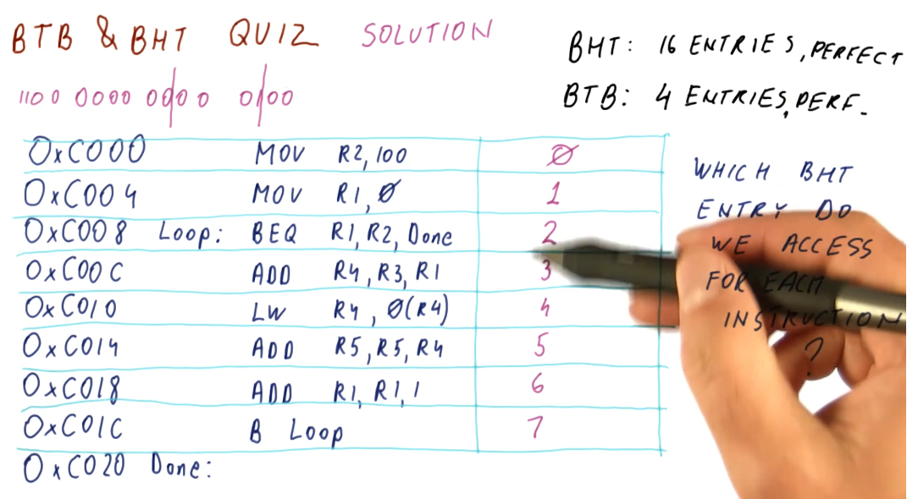
BTB & BHT Quiz 3
The below quiz excerpt demonstrates the conditions required to access the BTB.
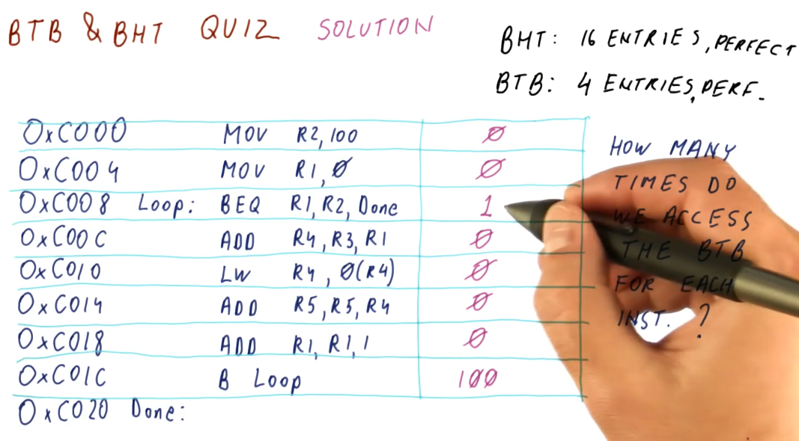
BTB & BHT Quiz 4
The below quiz excerpt demonstrates how the BTB is indexed using the program counter.

BTB & BHT Quiz 5
The below quiz excerpt demonstrates how we can calculate the number of mis-predictions for each instruction using an imperfect BHT.
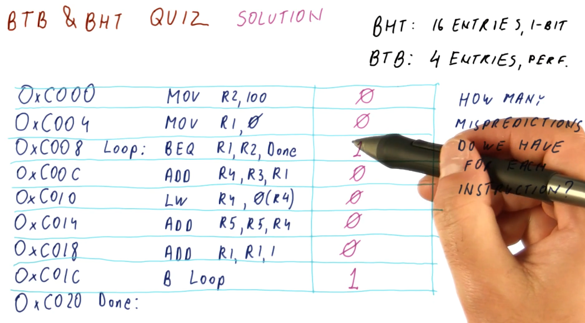
Problems with 1 bit prediction
So what's wrong with the 1 bit predictor? Why does its performance not satisfy the needs of computer architecture designers, creating the need to research pattern predictors?
The 1 bit predictor predicts these things well:
- Branches that are always taken
- Branches that are always not taken
- Branches that are taken A LOT more often than not taken
- Branches that are not taken A LOT more often than taken
The example below demonstrates how, when a 1 bit predictor encounters an anomaly in predictions for a particular branch, this can incur two mis-predictions.
The 1 bit predictor does not perform well when:
- Branches are taken more often than not, but not by much
- Branches are not taken more often than not, but not by much
- Encountering short loops
The 1 bit predictor will be bad when:
- Branches taken and not taken are about the same in number

2 Bit Predictor
A 2 bit predictor or 2 bit counter (2BP or 2BC) just adds another bit to the BHT to implement a state machine. The first bit in the 2BP is the prediction bit, and the second bit is called the hysteresis or conviction bit. These are the states of the 2BP:
00- strong not-taken state01- weak not-taken state10- weak taken state11- strong taken state
You can probably see where this is going. We start out in the strong not-taken state for a program counter. When we mis-predict that a branch is not-taken, we increment the hysteresis bit and transition to the weak not-taken state. We still don't take the branch until we are proven incorrectly again. A mis-prediction at this point will transition us to the weak taken state.
So unlike the 1 bit predictor, our affinity to take or not take a branch doesn't flip as easily. This solves the problem we had earlier where, if we encountered an anomaly for a branch that is usually taken or not taken, we won't incur a penalty of two mis-predictions.

2 Bit Predictor initialization
The below excerpt from the lectures demonstrates that it's a good idea to initialize the 2 bit predictor in a weak state, doesn't matter if it's taken or not taken. This is because, at program start, we don't know the history of the branches, yet, so starting in the weak state only incurs 1 mis-prediction penalty while starting in a strong state incurs 2.
On the flip-side, if a branch flip-flops and we start in the weak state, we will incur a mis-prediction penalty every single time we encounter the branch. This isn't common behavior (fortunately).
The evidence provided above would give you the idea that we should always init
the 2 bit predictor in the weak state, but for the sake of practicality, it
really doesn't matter and most 2 bit predictors are initialized at 00.

2 Bit Predictor Quiz
The below quiz excerpt from the lectures demonstrates how there is a worst-case scenario for the 2 bit predictor, showcasing a series of branches that will cause the predictor to mis-predict every branch.
The moral of the story is, every predictor will have a worst-case scenario. A good predictor will make it difficult to find or generate this worst-case sequence of branches.

1 bits, 2 bits... what else?
So we've seen that the 2 bit predictor is better than the 1 bit predictor at handling anomalous outcomes. Does this get better if we add 3 bits to the predictor? Well, maybe. Another bit will just increase the number of states, making it more difficult to transition to another prediction - this is useful if the anomalous behavior comes in streaks. This behavior is not common, however , in programs. Adding another bit imposes more cost, as it requires more space to store the information per program counter.
A 2 bit predictor meets the needs we identified earlier of handling anomalous behavior, but what about that one case where the branch outcome kept flip-flopping? Since increasing the number of bits to solve this problem doesn't really do anything, what's the next solution?

History Based Predictors
History Based Predictors are designed to recognize and learn patterns based upon the history of taken or not taken outcomes of a branch. Below is an example that provides a high-level representation of the concept. The flip-floppy branch outcomes are definitely predictable, just not with simple N-bit counters.

1 Bit History w/ 2BC
Below is an excerpt from the lectures that provides a high-level representation of a BHT with 1 bit for history, and two 2BC's to manage the state for taken and not taken branch outcomes.
What the 1 bit history 2BC BHT provides us is a predictor that is able to learn the pattern of a series of branch outcomes. The 1 bit history bit is used to index into the two 2BC's and, based upon the branch outcome, updates the state of each 2BC.

1 Bit History Quiz
Below is an a quiz excerpt from the lectures demonstrating the calculation of
the number of mis-predictions for a pattern of branch outcomes following the
this pattern: (NNT)*. As we can see from the outcome of the calculations in
the quiz, the 1 Bit History with two 2BC's is not a good solution for this
pattern.

2 Bit History Predictor
The 2 Bit History Predictor works very similar to the 1 Bit History Predictor,
now we've just doubled the number of 2BCs. The 2 Bit History bits are used to
index into the four 2BCs. The total cost of the predictor is 10 bits per branch.
Below is a high-level representation of how a 2 Bit History Predictor can
perfectly predict the (NNT)* sequence.

Thinking more about our history predictors, some things become evident. For an N-bit History Predictor:
- We can perfectly predict all patterns of length less than or equal to
N+1. - The cost for an N-bit History Predictor is
N + 2 * 2^Nper entry - This is wasteful, most of the 2BCs will go unused.

N-bit History Predictor Quiz
The below quiz is an excerpt from the lecture, outlining the cost and waste of different size N-bit History Predictors.

History Predictor Quiz
The below quiz is an excerpt from the lecture, demonstrating how to calculate
the number of entries in a history predictor necessary to support a branch
outcome pattern generated by these two for loops. As you can see, a lot of
2BCs are wasted just to support an 8 bit history.

History w/ shared counters
As we discussed earlier, N-bit history predictors use 2^N counter per entry,
even when we only use N counters to solve a pattern of N branch outcomes.
The idea proposed is to share 2BCs between program counter entries. We only use
N counters for N branch outcomes, so with enough counters there's a
possibility that we can share without having conflicts.

In the excerpt below, we see that designers use the pattern history table abstraction to maintain history pattern history information in a different table , separating it from the BHT. This way, 2BCs can be shared across multiple program counters.
Program counters reference into the PHT in the same way they did with the BTH
and BTB, using the least significant bits that are unique. Some translation
logic is used to XOR the bits of the program counter and the pattern history
information from the PHT to reference the appropriate 2BC for the program
counter's pattern.
In this example, the size calculation for these two tables is explained, and the overall cost is much less than the previous implementation of the N-bit history predictor.

The below excerpt showcases how the BHT is used more efficiently with this design. Patterns that are simple will only end up using 1 2BC, while other patterns that have longer patterns will be able to utilize more counters because less space is taken up by the patterns of other branches. The only cost appended to this design is the creation of the pattern history table. Keep in mind, with the indexing logic shown, it is still possible for branch entries to collide in the BHT.

PShare and GShare
The tail end of the history based predictor lesson describes the beginnings of what's known as the PShare predictor. What does PShare stand for? Private history for each branch and Shared counters so that different histories and counters might share the same counter. The PShare predictor is good for flip-floppy branch outcomes and 8-iteration loops.
In contrast, we have GShare with Global history and shared counters. What does global history mean? It means we have single history that is used to predict all branch outcomes. So every history, regardless of program counter, is used to calculate the counter for prediction. The GShare predictor is good for correlated branches.
What's a correlated branch? These are branches whose decisions rely upon what
other branches in the program are doing. An example is provided in the excerpt
below, showcasing a decision statement where one of two actions will take place
depending upon the value of a shape variable. Only one branch will evaluate to
try, thus they are correlated branches.

PShare vs GShare Quiz
Below is a quiz excerpt from the class explaining the differences between PShare and GShare. Given some C code, we are provided what the C code would resemble in assembly and then asked to determine how many bits of history would be required to support the branches in the code using both PShare and GShare.
The quiz demonstrates that it would be easy to predict the first and last
branches and that they don't require any history support. The first branch will
have the outcome of not taken 1000 times, and the last branch will have the
outcome of taken 1000 times. The second branch, however, will flip-flop between
taken and not taken, as each different integer will evaluate as even or odd.
Thus our PShare predictor will need 1 bit of history to support perfect
prediction of this branch's outcomes.
In contrast, GShare will require 3 bits of history to support the branches on
a global scale and in order to correctly predict the branch outcomes. Again,
the first and last branch outcomes are unlikely to change, however, the second
branch will flip-flop thus we need 3 bits of history to represent the
correlation between these branches. When we see that the first branch was not
taken, we'll also see the second branch either being taken or not taken, and
if the first branch wasn't taken we know that the third branch is taken.

PShare or GShare
Historically, designers would pick one or the other of these history based predictors. Eventually, designers realized they would need to use both as GShare works well with predicting correlated branches and PShare works better with self similar branches.
Tournament Predictor
As we discussed in the PShare and GShare section, designers desired to use two predictors to handle different cases of branches - correlated branches and branches that were self similar. But how do we determine which predictor will be used for a program counter (instruction) if we don't know what type of branch it is ahead of time?
The high-level representation below explains how the GShare and PShare predictors are both indexed by the program counter and each predictor provides a predicted branch outcome for that program counter value. At the same time, we use the program counter to index into a meta-predictor table that has a 2BC at each index. We use the meta-predictor to keep track of which shared predictor gives us the correct answer for the program counter the most often.

Return Address Stack (RAS)
So far we've seen branch prediction done for branch and jump instructions, but
what about function ret instructions? Functions are designed to be called
anywhere, so their ret address will not always be the same location in code.
This makes them tougher to predict using our current methods of branch
prediction - how do we prevent from fetching instructions from the wrong
location when returning from a function?

The return address stack is a separate predictor used specifically for predicting returns. It operates similar to the process stack in that it pushes and pops return address for function calls onto the stack. The primary difference between a process stack and the RAS is that the RAS is a very small hardware structure designed to make a prediction very quickly.
So what happens when the RAS is full and we continue to call into more functions? We have two options:
- Don't push any more return pointers into the RAS
- Wrap around and overwrite RAS entries
So, is it better to wrap around and overwrite RAS entries? The results of a quiz from the class provides the justification for why it's better to wrap around and overwrite RAS entries. In the provided justification below, we demonstrate with a high-level diagram that if we don't push new entries into the RAS when it's full, all we're doing is saving ourselves from mis-predicting older functions calls for functions that aren't getting called often.
In contrast, if we wrap around the entries in the RAS, we're more effectively using the entires we have in the RAS to correctly predict immediate function call returns that are more likely to happen more often.
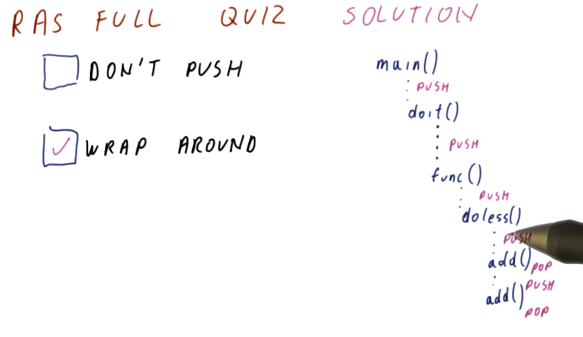
So how do we know the instruction is a ret?
Right, we can't push and pop values to/from the RAS without knowing if the
instruction is actually a ret, and we only learn what the instruction is if
we fetch and decode. Two methods exist:
- We can use a predictor to determine if the program counter contains a
ret. Once the program counter is seen, we now know this program counter contains an instruction that is aretand we can then push the value onto the RAS. - We can use pre-decoding!
- The processor contains a cache that stores instructions that have been fetched from memory. The processor fetches instructions from the cache unless the processor incurs a cache miss - then the process will access memory to acquire the next instruction.
- Pre-decoding is a process in which we access memory to acquire the next
instruction, and as we acquire the next instruction we decode a little bit of it
to determine if it's a
retinstruction. If it is, we store this information with the instruction in the cache.
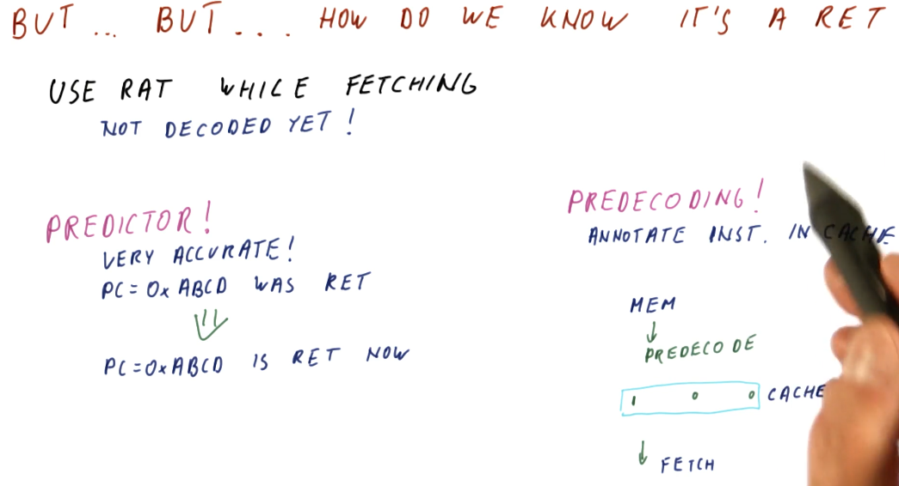
Predication
Summary
This lesson covers more topics in relation to control dependencies and the hazards they pose. We covered a bunch of different branch predictors in lesson 4 and we noticed that some branches are really difficult to predict, even when we use really sophisticated branch predictors.
This lesson showcases how the compiler can help us to completely avoid hard to predict branches.
Predication explained
Like we covered in the previous lesson, with branch prediction we attempt to guess the landing location of the branch and we begin fetching instructions from that instruction sequence into the pipeline. If we are correct in our guess, we incur no penalty. An incorrect guess incurs a penalty and, depending upon how long our pipeline is, this penalty can be huge.
Contrast this with predication. In predication, we fetch instructions from the instruction sequences of both possible landing locations for a branch. With this technique, even if we guess correctly or incorrectly, we still have to toss out 50% of the instructions that have been fetched into the processor pipeline. We don't incur a penalty anymore, however, because we realistically aren't making a guess, we're just saying yes to both outcomes of a branch instruction.
So if we're always incurring a penalty with predication, in what context is it better than branch prediction? Here is a breakdown of the examples showcased in the lecture:
- Loops - best application is a branch predictor. Loops are easier to predict as the number of iterations increases. With predication, we would be continuously fetching instructions from the instruction sequence after the loop, wasting a lot of effort as those instructions will continuously flushed from the pipeline - the branch that goes back into the loop will be taken almost always.
- Function calls/ret - best application is a branch predictor. The function will always return, taking the branch instruction. No reason to fetch instructions from the instruction sequence after a ret.
- Large decision statements (if-then-else) - best application is a branch predictor, dependent upon the size of the instruction sequence that comprises the decision statement and the length of the processor pipeline. If two directions in a decision statement were both 100 instructions long and the processor pipeline was 50 stages long, if we mis-predict we only incur a penalty of 50 stages. If we predict correctly, we incur no penalty. In contrast, a predicator will always incur the penalty of 100 because we load instructions from both possible instruction sequences following the branch instruction.
- Small decision statements (if-then-else) - the best application is predication. If two instruction sequence outcomes for a branch are both 5 instructions long, we will always incur a 5 instruction penalty with predication. If we use branch prediction and the processor pipeline is 50 stages long, if we make a mis-prediction, we'll have wasted 50 stages. Dependent upon how accurate the branch predictor is, we might be able to match the performance of predication in this use case, however, the more inaccurate the branch predictor the less viable an option it will be for small decision statements.

Conditional move
This section discusses the conditional move instructions available in the MIPS
and x86 instruction sets. The example below covers MOVZ and MOVN:
MOVZ- takes two sources and a destination register. If the third operand is equal to0, the second operand is loaded into the destination register.MOVN- takes two sources and a destination register. If the third operand is not equal to0, the second operand is loaded into the destination register.
Example x86 CMOV instructions are shown below.

MOVZ MOVN quiz
Below is quiz a on how to convert code that originally contains branch instruction into code that uses conditional moves to avoid making predictions. This code models a short decision statement that loads some values into different variables based upon some condition statement.

MOVZ MOVN performance
The excerpt from the lectures below showcases a comparison of the performance
between traditional branch prediction and the translation we did of the
instructions to enable predication. Give a branch predictor that's correct
80% of the time and incurs a 40 instruction penalty if we encounter a
mis-prediction, we average the number of instructions that can executed between
the two branch instruction sequences, 5 * 0.5 == 2.5, and then we throw in our
inaccuracy and penalty: 2.5 + 0.2 * 40 == 10.5.
So, on average, the branch predictor in this example incurs 10.5 instructions
worth of work to evaluate and execute this condition statement. In contrast, for
predication, all of the instructions are fetched and executed because we've
translated the branch into conditional move instructions. We incur 4
instructions worth of work to evaluate and execute this condition statement.

MOVx summary
To summarize predication using MOVx:
- Needs compiler support to translate eligible condition statements using
MOVxinstructions rather than generating branch instructions - Removes hard-to-predict branches, increasing performance
- More registers are needed in order to support predication using
MOVx- Results from both instruction sequences have to be calculated and stored
- More instructions are executed
- No branch prediction is conducted, both instruction sequences are executed and their results are stored in registers
MOVxis used to select the results of the condition statement
So what portions of this summarized list are absolutely necessary to implement predication? Well:
- Compiler support is definitely necessary
- The whole purpose of this is to remove hard-to-predict branches
- We don't need more registers to store our results - we can conduct comparison directly against values in memory
- We don't need to use
MOVxto select results
How do we remove the unnecessary portions of the summarization above? We make all of our instructions conditional! With this, we can achieve full predication - but it requires extensive support in the instruction set.
Hardware support for full predication
Usually, we have a separate opcode for conditional move instructions. For full predication, we add condition bits to every instruction. Below is an excerpt from the lectures showcasing the Itanium instruction set's use of qualifying predicates in its instructions to support full predication. Qualifying predicates specify what register will be used to conduct a comparison for a conditional move.

Full predication example
The excerpt below now shows our previous condition statement convert to a set
of instructions that uses full predication. The first instruction sets the
qualifying predicates, p1 and p2, to 0 or 1 based upon the value of R1
. If R1 is 0, p1 is set and the instruction predicated by p1 will
actually store its value into R3 after execution. If R1 is not 0, p2 is
set and the instruction predicated by p2 will store its value into R2 after
execution.
So, in the original code with branch instructions, we have the possibility of
executing 2 or 3 instructions based upon our prediction, but we still incur a
penalty. In our previous examples using MOVx, we were able to translate the
condition statement into a set of 4 instructions. Now, with hardware support for
full predication, we are able to translate this condition statement into 3
instructions.

Full predication quiz
Below is a the full predication quiz solution from the lecture, conducting a performance comparison between the original branch version of the condition statement code to the full predication translation.

References
Instruction Level Parallelism (ILP)
Parallel instruction execution
The below excerpt from the lectures showcases the hazards that can manifest due
to data dependencies in parallel processor pipelines. As you can see here
multiple instructions are destined to be executed and, if all instructions are
able to be executed in parallel, it will take 5 cycles to execute a number of
instructions. As the number of instructions approaches infinity, our CPI
approaches 0.
This isn't realistic - some instructions will depend upon earlier instructions to write values to registers before the instruction is executed. If this isn't done, we will encounter data hazards wherein the registers we use for our instructions will contain stale values, ultimately causing the program to execute incorrectly.

The execute stage
In previous sections of this notebook we discussed forwarding, a technique that can be used to resolve data dependencies and remove hazards. Unfortunately, this technique wont' work for us when we're executing instructions in parallel. The instruction that contains the data dependency will not receive the outcome of the forwarded instruction before it executes because they are executed in parallel.
In order to remove the hazard related to this data dependency, we must stall the instruction until the previous instruction executes. Then, we will forward the result of the executed instruction to the dependent instruction. This will increase our CPI.

RAW dependencies
The below excerpt from the lectures showcases how we can calculate the CPI for a set of instructions based upon the number of data dependencies that exists between them. As you can see, the more RAW dependencies that exist, the higher our CPI.

WAW dependencies
The below excerpt from the lectures showcases how a WAW dependency can manifest due to a RAW dependency in previous instructions. The WAW dependency poses a hazard because the previous instruction is stalled due to a RAW dependency. If this goes ignored, the dependent instruction in the WAW dependency will write to a register before the previous write, executing instructions out of order. In order to solve this, the dependent instruction must be stalled twice so that the previous instruction can write.

Dependency quiz
Below is a quiz from the lectures in the class that showcases how multiple RAW and WAW dependencies are handled in the processor pipeline.

False Dependencies
We covered this in previous portions of this notebook, but we'll go over the dependency types once again. We have true dependencies and false or name dependencies. A true dependency is the RAW (read after write) dependency - pretty obvious because this is how the program is actually intended to execute. Both the WAR (write after read) and WAW (write after write) dependencies are false dependencies. In both of these dependencies, we are re-using registers for instructions when we could change the registers being used to eliminate the false dependencies completely.
Duplicating register values
This is a complicated technique in which we save multiple versions of a
value for a register that is being written to. In the excerpt below, two
different writes occur for the register: R4. This register is used in two
different read operations, but what value will be used if the register is
written twice?
To remove the hazard posed by this WAW dependency, we store both versions of
R4 and then each read operation will utilize the appropriate version based
upon the chronological order of the writes. The third instruction in this
example will use the outcome of the write in instruction two for its read
operation, even though instruction four writes to R4 before instruction two
does. A future instruction will use the most previous version of R4 for its
read operation, even though the write by instruction two occurs after the write
by instruction four.
Essentially, we are keeping track of all possible versions of a register in a parallel pipeline and different read operations that require the value of register will use the value generated by the most recent write operation.

Register renaming
So duplicating and managing register values can get pretty complicated and time consuming. Another technique processors can use to remove hazards created by data dependencies is register renaming.
In the below excerpt from the lectures, we define some terms:
- architectural registers - these are register names used by the programmer and the compiler.
- physical registers - these are the physical registers available to the processor to actually store real values.
- register allocation table - this is a table used by the processor to translate architectural register names to physical registers. This table defines which physical register contains the data for a specified architectural register.
The processor rewrites the program it's executing to use the physical registers. Through register renaming, it will have more registers available to store values and avoid hazards presented by data dependencies.

RAT example
The below excerpt from the class showcases how a RAT works. Each time a new value is produced, a different physical register is used to store that value. Values for registers that are being read are acquired from the RAT after it translates the architectural name to the physical register. We call the WAW and WAR dependencies name dependencies because the name is the whole problem. If we rename the register that the value is being written to for each write, the instructions won't overwrite the work of the other instructions if they're executing in parallel.
In this example, we can see that each write increments the physical register number that's being written to. This removes the hazard of a register being overwritten by a later instruction before an earlier instruction can conduct its write. Because the writes are to different physical registers, when an instruction is decoded and needs to read a register, the value it's reading is going to be from the instruction prior, not the most recent write to the register.

Register renaming quiz
Below is a quiz for register renaming from the lectures. Pretty straightforward.

False dependencies after renaming
So does renaming actually remove our WAR and WAW dependencies? Yes! In the below
excerpt from the lectures we are shown a program that contains a set of
dependencies for each instruction. Because each instruction has these
dependencies, they must be executed in order, causing us to have a CPI of 1.
However, with renaming, we are able to eliminate the WAR and WAW dependencies
improving our performance to a CPI of 0.33.

What is ILP?
Instruction level parallelism (ILP) is a property of a program given the fact that it's running on an ideal processor. What's an ideal processor? An ideal processor has these attributes:
- Processor dispatches an entire instruction in
1cycle. - Processor can do any number of instructions in the same cycle.
- The processor has to obey true dependencies when doing this.
So what are the steps to acquire the value of a program's ILP? A program's ILP is equal to the IPC when executing on an ideal processor following the rules stated above. Obviously ideal processors like this always aren't achievable, the ILP for a program will be different on actual real-world processors. ILP gives us a value, however, for the parallel nature of program - defining how many true dependencies exist within the code.
The steps to acquire the ILP of a program are:
- Rename the registers, as shown previously.
- "Execute" the code on the ideal processor.
ILP example
The below excerpt from the lectures showcases how we can compute the ILP for a
given set of instructions: ILP == num instructions/cycles. In this example,
the professor identifies the true dependencies that exists for the set of
instructions and sees that the fifth instruction cannot execute until the writes
of instruction one and three are complete. Thus, this program will take 2 cycles
on an ideal processor to execute.
A neat trick that is described in the lecture is that we don't even have to conduct register renaming in order to calculate the ILP. All we have to do is identify the true dependencies - the register renaming will take care of the false or name dependencies for us.
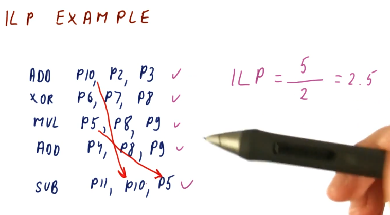
ILP quiz
Below is a quiz from the lectures showcase the technique for calculating ILP described above. We don't conduct register renaming, we just identify the true dependencies to determine on what cycle instructions are eligible to execute. After we determine the minimum number of cycles to resolve the true dependencies, we can find the ILP of the program.

Calculating ILP with structural and control dependencies
When calculating ILP, we don't account for structural dependencies. These dependencies result for architectural issues like not having an adder available for a specific operation, etc. Something outside of the programmer's control, solely relies with the manufacturing of the processor.
For control dependencies, we essentially ignore them. We assume that we
have perfect same-cycle branch prediction. In the example below, we show that
a branch instruction has a data dependency on instructions prior to it, however,
because we have perfect branch prediction we know that we will jump to the
Label. Thus, we fetch the instructions from the Label and execute them, even
though our branch has not been executed, yet.

ILP vs IPC
Below is an excerpt from the class conducting a comparison of the calculations for ILP vs IPC on a given example processor. The processor has some limitations such as: 2-issue (2 instructions / cycle), 1 MUL and 1 ADD/SUB/XOR components (structural limitations). With this, we calculate the ILP for the given instructions and then we calculate the IPC twice: once ignoring the structural limitations and once factoring in the structural limitations.
As we can see, the IPC for a processor can only be equal to or less than the ILP. Real processors will have limitations and won't always be able to achieve the ILP of a program.

ILP vs IPC quiz
Below is a quiz from the lecture that shows us how to calculate and compare the ILP and IPC of a program for a given test processor. Note, the processor in this example can only dispatch instructions in order, thus degrading our performance in comparison with the out of order processor's we've seen in the past. This limitation causes us to have to stop dispatching instructions when we encounter a dependency.
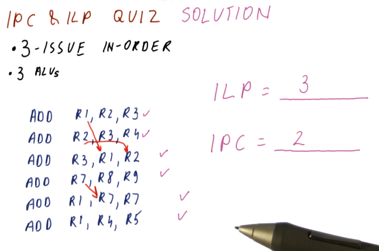
ILP vs IPC discussion
This slide sorta restates what we covered earlier - a summary, essentially. The ILP can only be calculated using the abstract concept of an ideal processor, and it's generally representative of the best performance of a program. The ILP will always be greater than or equal to the IPC, and the IPC is calculated using an actual processor with issue and structural limitations.
The limitations for processors and how they affect IPC breaks down like this:
- If a processor narrowly issues instructions (1 - 2 instructions / cycle), and only executes instructions in order, the processor will mostly be limited by the narrowly issued attribute.
- If a processor widely issues instructions (4 or more instructions / cycle) , and only executes instructions in order, the processor will mostly be limited by the in order attribute.
- The best case is when the processor widely issues instructions but also can execute instructions out of order. To do this, the processor will have to dispatch a lot of instructions per cycle, eliminate false dependencies through register renaming, and reorder instructions so they can be executed out of order.

Instruction Scheduling
This lesson covers how instruction scheduling allows us to execute programs faster by dispatching more than one instruction per cycle while also handling data dependencies.
Improving IPC
As we've seen in previous lectures, there are multiple ways for us to improve IPC:
- Handling control dependencies - if we have good branch prediction we can better handle control dependencies, allowing us to fetch the correct instructions and avoid wasting cycles.
- false data dependencies - when we encounter false or name dependencies (WAR and WAW), we use register renaming to completely eliminate the hazards posed by these data dependencies.
- true data dependencies - we can improve our performance even when RAW dependencies are present using out-of-order execution. We find instructions that are not dependent upon the writes of previous instructions and execute those while we wait for the results of an instruction to be forwarded to dependent instructions.
- structural dependencies - to improve our performance we must use wider issuing processors - we'll be able to dispatch more instructions because we'll have more resources available.
Tomasulo's algorithm
Tomasulo's algorithm is the basis for modern processors' implementation of out-of-order execution. It solves the requirements for register renaming, and is able to determine which instructions have input ready and which instructions are dependent upon pending writes. Below is an excerpt from the class describing what the differences are between Tomasulo's algorithm and how modern processors are designed.

Tomasulo's algorithm - the big picture
Below is an excerpt from the class drawing out the components that comprise Tomasulo's algorithm. There are a lot of moving parts and they'll be broken down into more detail later - right now we're just summarizing the pieces. Here is a quick description of all of the parts:
- instruction queue - the instruction queue is pretty self explanatory, this is where instructions sit and wait to be issued - they are fetched from memory.
- reservation station - Tomasulo's algorithm was designed for floating point instructions, so this is where those types of instructions wait for their required values before being dispatched. The reservation stations are split into simple instructions that require and adder and more complex instructions that might require a multiplier. Reservation stations enable Tomasulo's algorithm to determine which instructions are ready to execute - implementing out-of-order execution.
- registers - once instructions are dispatched from the reservation stations , the values they generate are written (broadcasted) to the registers. Instructions in other reservation stations will be able to acquire their forwarded values so that they can be dispatched as well.
On the left-hand side of this picture, you'll see that there's logic to cover load and store instructions as well. These were not handled by Tomasulo's algorithm, but modern processors now handle all instruction types similar to Tomasulo's algorithm. The results of the load and store instructions are also broadcasted so that other instructions waiting to be dispatched can take advantage of the values before they are written.
There are three stages of Tomasulo's algorithm:
- issue - this is when an instruction is sorted from the instruction queue into either load / store or a floating point instruction.
- dispatch - this is when an instruction is actually executing using processor resources.
- write result (broadcast) - this is when the result of the instruction is written to the registers file for later use by dependent instructions.
Note - the instructions in the reservation stations also have two inputs per station to receive broadcasts. This is to provide dependent instructions with the necessary values to be dispatched as early as possible.

Issuing
Here are the steps that occur for issuing in Tomasulo's algorithm:
- Take the next instruction, in program order, from the instruction queue.
- This must be done in program order in order for register renaming to work correctly.
- Determine where input for an instruction originates.
- Are the inputs required located in the register file? Or are we still waiting on an instruction to generate the necessary values? If we need to wait for an instruction, which one? This will utilize a RAT.
- Find a free reservation station of the correct type (addr or mult).
- If all the reservation stations are busy, no instructions are issued this cycle.
- Put the instruction in the reservation station.
- Tag the destination register for the result of the instruction being issued.
- This allows instructions who need this result to be able to reference the correct name and identify their dependency.
Issuing example
Below is an excerpt from the class that showcases how issuing works. Each instruction is issued from the example instruction queue, and the instruction queue is shifted when an instruction is successfully issued. The are plenty of reservation stations available, so no instructions had to wait in order to acquire a spot in a station.
Following the steps above, before an instruction is issued its inputs must be translated using the RAT. If the value is available, the instruction will read the input directly from the register file. The values that instructions generate will be renamed and the RAT will contain the name of the reservation station for generated values. This way, when other instructions that depend upon a register value are issued, they will use the input generated from other instructions by using their reservation station name.

Issue quiz
Below is a quiz from the lectures where we practice the issuing portion of Tomasulo's algorithm. In this example, we are unable to issue the second instruction because there are no spots left in the reservation stations. This example is pretty straightforward.
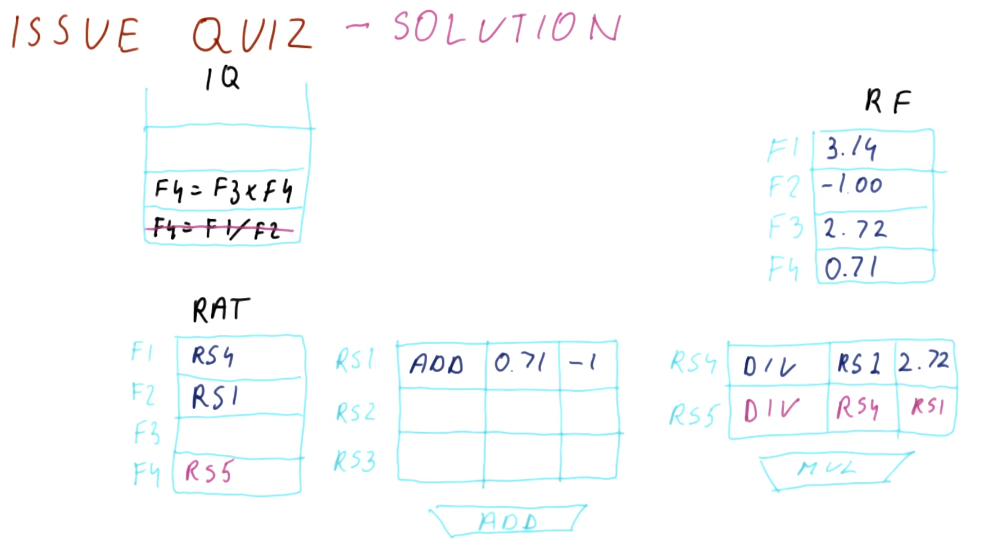
Dispatching
Below is an excerpt from the class that showcases how dispatching works. The results of an instruction from a reservation station is broadcast - its generating reservation station number is attached to the value that it's generating. Instructions that depend upon a value from that reservation station are able to acquire the values necessary to be dispatched, and they will also broadcast their results in the same manner.

Dispatching when > 1 instruction is ready
Below is an excerpt from the lectures displaying a situation in which more than one instruction in the reservation station is ready to execute. How do we go about making the right decision for best performance? There are three options:
- Dispatching the oldest instruction first - the most fair option and most balanced for performance.
- Dispatching the instruction with the most dependencies - the highest performance option, however, it requires us to search all reservation stations and determine dependencies - power hungry.
- Randomly dispatching - not a bad option, and at some point every instruction will be dispatched, but performance could be degraded.
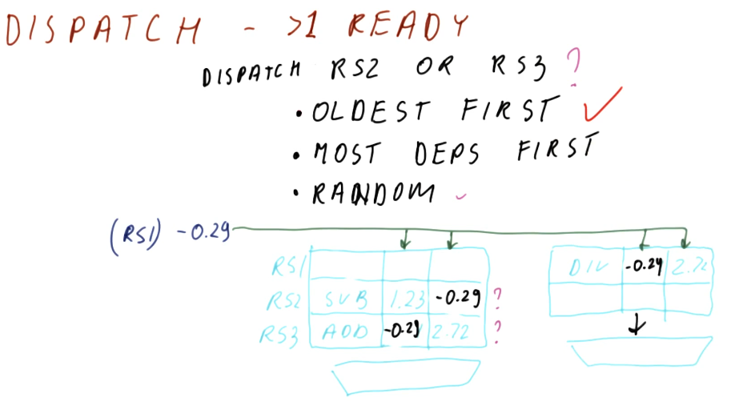
Dispatch quiz
Below is a quiz from the lectures on dispatching. The quiz asks why the
instruction held in RS3 hasn't executed before the current state of the
reservation stations. Three options are given, but only two are reasonable.
- The first option: "It was issued in the previous cycle" is reasonable because there can definitely be a time in which the instruction was issued too late so it didn't have time to execute.
- The second option: "Another instruction was dispatched to the adder" is
possible because maybe
RS1was currently executing on the adder to generate a value. - The third option: "RS2 is older than RS3" is not reasonable. The whole purpose of Tomasulo's algorithm is to support out-of-order execution. Instructions will be executed as soon as their values are available, despite how old an instruction is.
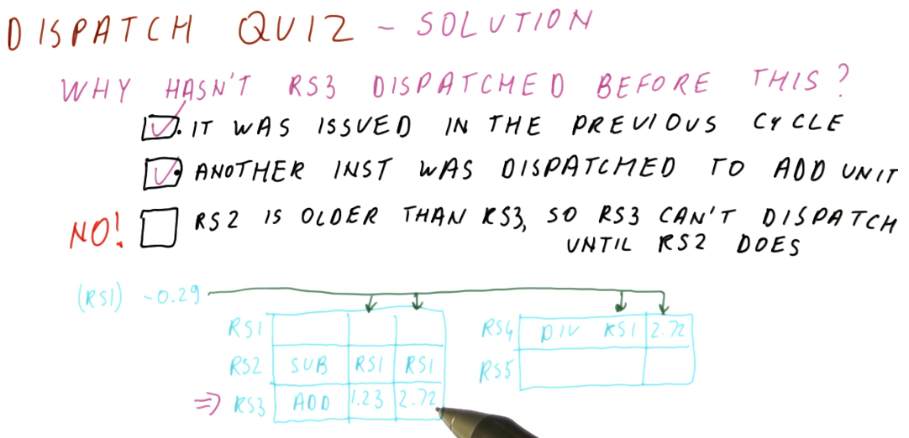
Writing (Broadcast)
Below is an excerpt from the lectures that shows us what happens when a result is written or broadcasted to the reservation stations and the register file. Some steps take place:
- The result is tagged with the reservation station that is generating this result. This combo is then emitted onto the bus.
- The result is written to the register file. We are able to determine what register is being written based upon the RAT - it will contain the name of the reservation station for the appropriate register.
- The RAT is then updated, clearing the reservation station name from the table and marking the location for a register as clear.
- The spot the instruction held in the reservation station is freed.

More than 1 broadcast?
There are multiple possibilities that we can consider when handling multiple broadcasts. The first idea is to make more than one bus available - a bus for each dispatch unit in the processor. While that sounds like a good idea, the number of structural dependencies to implement this doubles for each bus - that's a lot of resources and more logic is needed in order to correctly direct the different values being generated.
Another option is to give priority to one dispatch unit over the other, and this is the more likely case. In the example below, we give more priority to the slower dispatch unit. Why? Because if one dispatch unit is slower, it's more likely that faster dispatch units are waiting on values to be broadcasted by the slower one.

Stale broadcasts
Can we have stale broadcasts? Is that really a thing? Not necessarily. In the
example below we see that a broadcast is occurring for RS4, but there's no
entry for that reservation station in the RAT. So where will this result be
written to - what's its destination?
We can see that RS2 is generating a value and it has overwritten F4, which
was the original destination of RS4's value - this is perfectly fine and works
as intended. RS2 was the only instruction that depended on the output of
RS4, it will have the value it needs to update F4. All subsequent
instructions reading F4 will utilize the value generated by RS2 - the
"stale" value being broadcasted by RS4 won't cause any issues.

Review
Part 1
Below is a summarization of Tomasulo's algorithm. In this algorithm, for each instruction we are:
- issuing - resolving the registers for an instruction using the RAT and then updating the RAT with the reservation station name of an instruction generating values.
- capturing - capturing output of instructions while in the reservation station.
- dispatching - dispatching ready-to-execute instructions.
- writing results - broadcasting the results of instructions to instructions capturing output in the reservation station, updating the register file and the RAT.
An awesome thing to note as that each of these things is happening for different instructions on each cycle. Every instruction is in one of these stages as we execute instructions out of order.

Part 2
Below is an excerpt from the lecture that provides some further discussion of Tomasulo's algorithm. Some questions that are posed:
- Can we issue and dispatch an instruction in the same cycle? - no, we cannot. During an issue and instruction is loaded into the reservation station, we won't be able to dispatch it until we identify that it is ready for executing. While its dependencies may be resolved when being entered into the reservation station, we won't know it's ready to be dispatched until the next cycle.
- Can we capture and dispatch an instruction in the same cycle? - also no, for similar reasons as above. Once an instruction has captured all of its necessary values, it still needs to be marked for execution after the reservation stations have resolved which instructions are ready. This can happen if hardware support is available.
- Can we update the RAT entry for an issue and a broadcast in the same cycle? - yes, the broadcast and the issue can procedures can both update the RAT in the same cycle, however, the issue will be the last to update the RAT. This way, future instructions will reference the output of the reservation station by the issue, not by the broadcast.

One cycle quiz part 1
Below is a quiz from the lectures where we practice predicting what values will exist in the register file and the RAT after one cycle takes place. In this example we have a processor that does not allow issuing and dispatching in the same cycle, but does allow capturing and dispatching and updating the RAT and writing to the register file in the same cycle.
Given the values provided for the different parts of the scheduler, we are able
to determine that the F1 entry in the RAT will be updated by the instruction
being issued, and the register file entry for F0 will be updated by the
broadcast of RS0. Simultaneously, the entry for F0 in the RAT will be
cleared.

One cycle quiz part 2
Below is a quiz from the lectures where we practice predicting what values will exist in the reservation station for a cycle of the processor pipeline. We can see that an instruction is issued, an instruction is freed from the reservation station upon dispatch, the same instruction that was just issued is able to capture the broadcast of the dispatched instruction.

One cycle quiz part 3
Below is a quiz from the lectures where we predict what instruction will be
dispatched from the reservation station in the example cycle. We can see that,
as soon as the instruction in RS1 captures its required value, it will be
dispatched. The instruction in RS2 will not be eligible for dispatch because
this processor does not allow issuing and dispatching in the same cycle.

Tomasulo's algorithm quiz
Below is a quiz from the lectures quizzing us on what is not true about Tomasulo's algorithm. What's not true? Tomasulo's algorithm does not dispatch instructions in program order and it does not write results in program order. Tomasulo's algorithm does issue instructions in program order.

Load and Store
Now that we've discussed how Tomasulo's algorithm handles data dependencies for floating point instructions, how does it handle memory dependencies? Well first, what memory dependencies are there? They're actually the same three categories as data dependencies:
- RAW - an instruction stores a word to some address and then a different instruction loads a word from that same address - this is a true dependency.
- WAR - an instruction loads a word from memory and then another instruction stores a word into memory; if these instructions got re-ordered, we could possibly load the value from the store, thus giving us incorrect program execution.
- WAW - two instructions both write to the same address; if these instructions are re-ordered, it's possible that a stale value is written to the address.
So what do we do about this?:
- In Tomasulo's algorithm, we execute load and store instructions in order. Even if a load instruction is ready to execute, it will be stalled until the store instruction preceding it is completed - even if that store instruction is stalled waiting on some value.
- Modern processors identify dependencies, re-order load instructions, etc. similar to how floating point instructions are handled by Tomasulo's algorithm. These techniques will not be discussed in this lesson, however, they will be touched upon later.
Timing
Below is a quiz on timing from the lecture. Now that we understand the inner working of Tomasulo's algorithm, we predict how long it takes for instructions in the queue to execute based upon the rules provided.
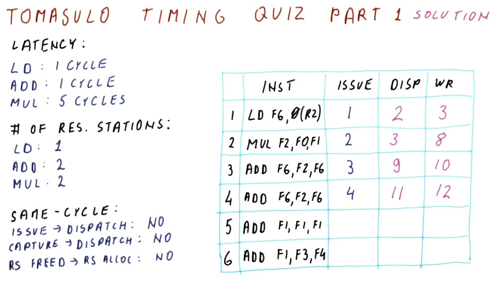
Timing quiz part 2
Below is the second part of the previous quiz. Of note, instruction 5 is unable to be dispatched until cycle 11 because the reservation stations are held by instructions 3 and 4. Instruction 6 cannot be issued until instruction 4 completes its write back and is cleared from the reservation station.